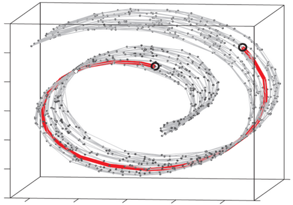
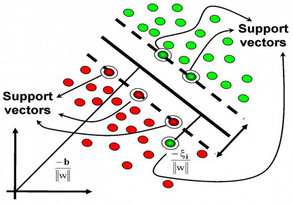
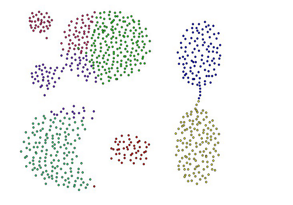
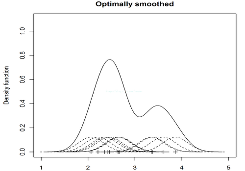
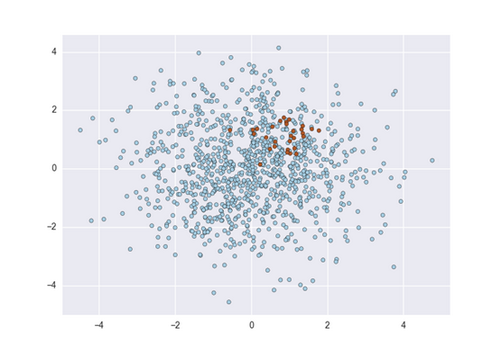

研究方向-神经网络
设计像人类一样学习、记忆、联想、推理的增量学习神经网络
1.我们的神经网络研究
机器学习研究的主要目的是让计算机程序模拟人类的学习行动，从数据或经验中归纳出有用的知识并提升自身的性能。RINC实验室在机器学习领域的研究以神经网络模型的设计和应用为核心，具体研究包括：自组织增量学习神经网络、数据降维和流形学习、支持向量机、聚类分析、密度估计、非平衡学习等。自组织增量学习神经网络(Soinn)。
2.数据降维和流形学习
在科学研究和工程应用中，很多实际数据（如各种图像、音频、文本等）具有高维数的特点。这些高维数据可以提供丰富而详尽的信息。然而随着数据维数的提高，高维空间体积快速增长，而可用数据变得稀疏，此时很可能发生维数灾难，令平常使用的数据组织策略变得极其低效。数据降维技术是解决以上问题的一种有效手段，数据降维能够消除数据冗余，简化数据，揭示数据内在结构和联系，提高计算效率，改善数据可理解性，提高学习算法的精度。
3.在线增量式的局部线性SVM算法
支持向量机算法(Support Vector Machine,SVM)可以用来解决分类、回归等问题，在现实生活中已经得到了广泛的适用，例如计算机视觉、文本分类等。SVM算法主要有两种类型：线性SVM拥有很高的学习和预测效率，但只适用于线性分类问题；核SVM的性能更好，但速度非常慢。我们的研究目标是设计出一种新的模型，兼具核SVM的性能和线性SVM的速度。
4.聚类分析
聚类分析(cluster analysis)是在非监督的条件下将数据分为到不同的类，使同类数据比异类数据更加相似的过程。聚类是数据挖掘的主要任务之一，广泛应用于机器学习、模式识别、图像分析、信息检索、生物信息学、数据压缩和计算机图形学等诸多领域。聚类可以大致地区分为：1. 硬聚类(hard clustering)，每个对象仅属于一个聚类；2. 模糊聚类(fuzzy clustering)，每个对象以一定的归属度从属于每个聚类。经典的聚类算法包括K-Means、高斯混合模型、谱聚类、DBSCAN等等，这些算法各有其优势和缺陷，适用于不同的问题。
5.密度估计
给定一组观察数据，估计其潜在的概率密度函数是统计学中的一个基本问题，被称为密度估计问题。随机变量的概率密度函数描述了特征空间的数据分布情况，因此，它能够为数据驱动的决策过程提供非常重要的判断依据信息，并经常被用于机器学习和数据挖掘领域。密度估计的传统是以核密度估计(Kernel Density Estimation)为代表的非参数式(Nonparametric)方法和以高斯混合模型(Gaussian Mixture Model)为代表的参数式(Parametric)方法。
6.非平衡学习
在机器学习领域，很多标准学习算法都假设或者期望学习数据的类分布是平衡的，各个类的分类错误代价也是相同的。但是在现实生活的很多应用中，比如异常检测，欺诈检测等等，数据的类分布往往无法满足这些假设，这种训练数据的类间样本分布不均衡的学习问题称为数据非平衡学习问题(Learning from Imbalanced Data)。而标准分类算法并不适合直接对非平衡数据进行训练。